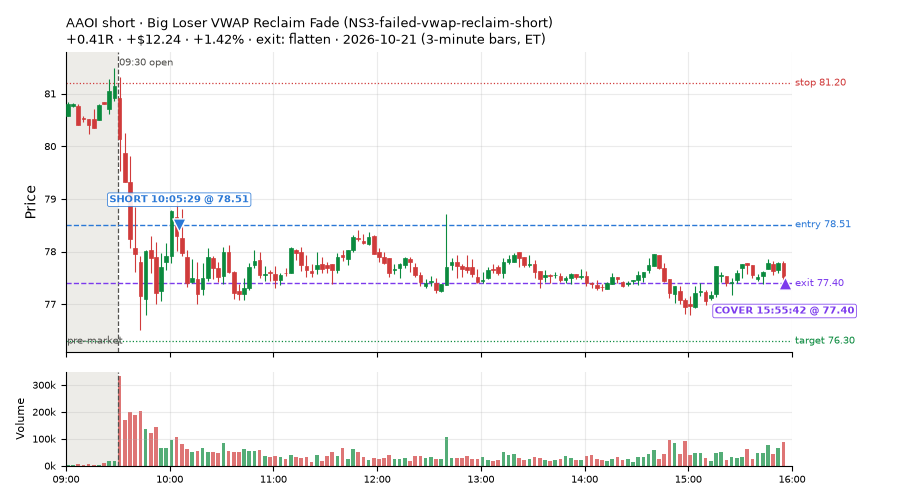
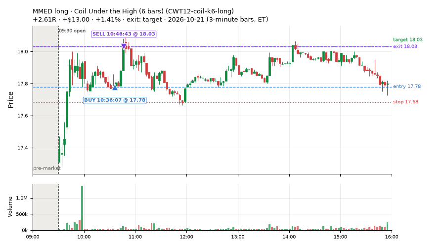
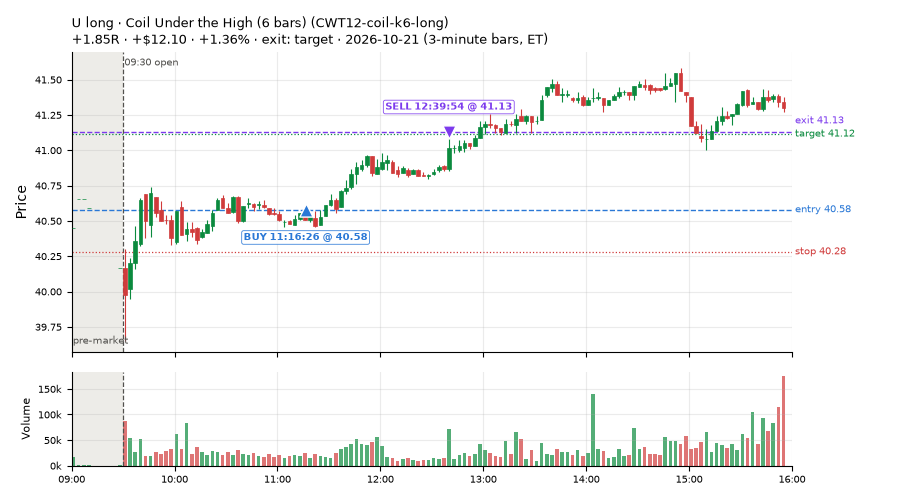
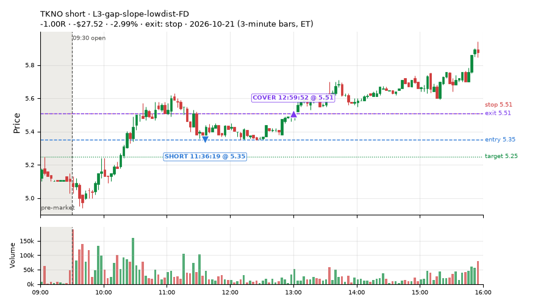
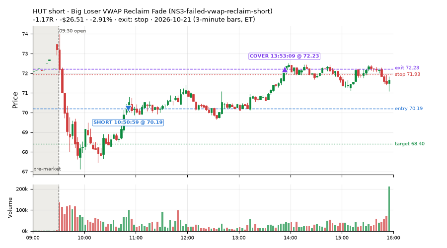
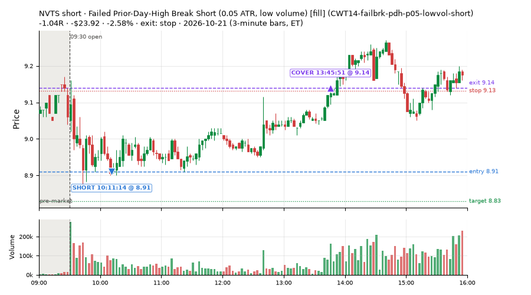
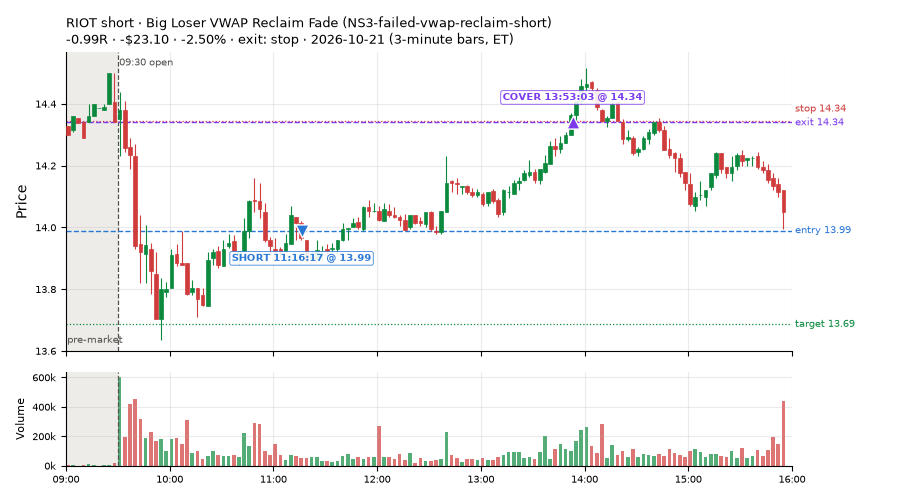

199 trades · win rate 46% · P/L $-501.84
PROBATION: no live setup has passed both locked test periods. 10 owner-directed setups added 2026-10-08 (MarcoFlow top 5 + 5 new), untested live. RW6G1 (RW6 + VWAP band guard) added 2026-10-09, probation.

| Symbol | Setup | Side | In | Out | Entry | Exit | Exit reason | % gained | P/L |
|---|---|---|---|---|---|---|---|---|---|
| AAOI | Big Loser VWAP Reclaim Fade (NS3-failed-vwap-reclaim-short) | short | 10:05 | 15:55 | 78.51 | 77.40 | flatten | +1.42% | $12.24 |
| MMED | Coil Under the High (6 bars) (CWT12-coil-k6-long) | long | 10:36 | 10:46 | 17.78 | 18.03 | target | +1.41% | $13.00 |
| U | Coil Under the High (6 bars) (CWT12-coil-k6-long) | long | 11:16 | 12:39 | 40.58 | 41.13 | target | +1.36% | $12.10 |
| Symbol | Setup | Side | In | Out | Entry | Exit | Exit reason | % lost | P/L |
|---|---|---|---|---|---|---|---|---|---|
| TKNO | L3-gap-slope-lowdist-FD | short | 11:36 | 12:59 | 5.35 | 5.51 | stop | -2.99% | $-27.52 |
| HUT | NS3-failed-vwap-reclaim-short | short | 10:50 | 13:53 | 70.19 | 72.23 | stop | -2.91% | $-26.51 |
| HUT | RW4-ns3-adv150-short-FD | short | 10:50 | 13:53 | 70.19 | 72.02 | stop | -2.61% | $-23.78 |
| NVTS | CWT14-failbrk-pdh-p05-lowvol-short | short | 10:11 | 13:45 | 8.91 | 9.14 | stop | -2.58% | $-23.92 |
| RIOT | NS3-failed-vwap-reclaim-short | short | 11:16 | 13:53 | 13.99 | 14.34 | stop | -2.50% | $-23.10 |







Signal to fill: median 1s, 90th percentile 3s (198 trades). Bars close each minute; the order follows the bar close.
Best excursion (MFE): median 0.37R; worst (MAE) median 0.80R. 32% of trades never got +0.25R in our favour; 6 reached +1R and still closed at or below 0.
| Symbol | Setup | Best R | Worst R | Closed R |
|---|---|---|---|---|
| FIS | CWT14-failbrk-pdl-p05-long | +7.31 | -0.90 | +0.46 |
| TOST | CWT12-coil-k6-long | +1.99 | -1.15 | -1.03 |
| SPCU | orb20_a | +1.71 | -1.12 | -1.03 |
| SAIL | CWT12-coil-k6-long | +1.51 | -1.01 | -0.94 |
| TTE | CWT12-coil-k6-long | +1.09 | -1.17 | -1.25 |
| Entry time | Trades | Win | Avg R | P/L |
|---|---|---|---|---|
| 09:50-10:30 | 114 | 54% | -0.21 | $-253.84 |
| 10:30-11:30 | 59 | 31% | -0.34 | $-178.50 |
| 11:30-13:00 | 13 | 62% | +0.01 | $-17.97 |
| 13:00-14:00 | 7 | 29% | -0.45 | $-38.38 |
| 14:00-16:00 | 6 | 33% | -0.26 | $-13.15 |
| Setup | Trades | Win | Avg R | Adj R (net of SPY) | P/L |
|---|---|---|---|---|---|
| Coil Under the High (6 bars) (CWT12-coil-k6-long) | 31.0 | 35% | -0.15 | -0.79 | $2.92 |
| Failed Prior-Day-High Break Short (0.05 ATR, low volume) [fill] (CWT14-failbrk-pdh-p05-lowvol-short) | 44.0 | 45% | -0.41 | -0.12 | $-147.62 |
| Failed Prior-Day-High Break Short (0.1 ATR) [fill] (CWT14-failbrk-pdh-p10-short) | 42.0 | 45% | -0.34 | -0.18 | $-128.58 |
| Failed Prior-Day-Low Break Long (shallow) (CWT14-failbrk-pdl-p05-long) | 40.0 | 70% | +0.01 | -0.20 | $22.87 |
| L3-gap-slope-lowdist-FD | 2.0 | 0% | -1.00 | -0.99 | $-36.42 |
| Early Sellers into a Pop (all day) (MF3-open-flowsell-rsi5hi-FD) | 4.0 | 75% | +0.49 | +0.69 | $15.79 |
| Sellers into Strength (all day) (MF5-flowsell-vwapup-rsi5hi) owner-directed; holdouts once: Sep-Oct -0.001R n264, Apr-Jun -0.010R n1199 | 2.0 | 100% | +0.71 | +0.86 | $6.25 |
| NS1-rsidip-rsi5pop-long-FD | 3.0 | 67% | -0.00 | +0.15 | $-1.80 |
| Big Loser VWAP Reclaim Fade (NS3-failed-vwap-reclaim-short) owner-directed; holdouts once: Sep-Oct +0.119R n65, Apr-Jun -0.136R n524 | 9.0 | 11% | -0.60 | -0.44 | $-94.41 |
| NS5-sma50-flush-oversold-long-FD | 1.0 | 0% | -0.15 | -0.60 | $-0.78 |
| RW4-ns3-adv150-short-FD | 8.0 | 0% | -0.59 | -0.37 | $-92.38 |
| RW7-gapdn-bounce-early-short-FD | 2.0 | 50% | +0.08 | +0.01 | $2.39 |
| ST5-pdbrkup-short-mid-t05s1-FD | 1.0 | 100% | +0.14 | +0.11 | $3.40 |
| ST7-rsi50dn-long-pm-t1s1-FD | 5.0 | 20% | -0.49 | -0.47 | $-44.22 |
| ST8-volspikedn-long-pm-t1s1-FD | 2.0 | 100% | +0.15 | +0.09 | $11.31 |
| Index Last-Half-Hour Momentum (intraday_momentum) failed Apr-Jun holdout: -0.091R/trade over 147 trades | 2.0 | 50% | -0.06 | -0.25 | $-0.34 |
| 20-Minute Opening Range Breakout (orb20_a) failed Apr-Jun holdout: -0.040R/trade over 421 trades | 1.0 | 0% | -1.03 | -0.99 | $-20.22 |
Market direction (SPY, beta 1) accounted for $-102.21 of today's $-501.84; the rest ($-399.63) came from the setups themselves. Avg R net of SPY: -0.27 (incl. a hedge leg's cost; report only).
32 setups live today. Today: 360 signals, 199 taken, 9 lost because another setup held the symbol (2%). Since 2026-10-09 (9 sessions): 5757 signals, 2417 taken, 600 lost to other setups (10%). Peak open positions today 90 of 400 slots. Earnings blackout removed 552 symbols before scanning.
Simulated playing time (not live): 3012 what-if trades of signals not taken, avg -0.30R, 40% winners; of them 447 lost to another setup (avg -0.00R).
Silent: IDX1-qqq100-0955-TQQQ-trail, IDX1-qqq100-0955-TQQQ-hold, IDX2-spy075-0945-3x-trail, IDX3-spy075-0955-3x-trail, IDX5-spy050-0945-3x-trail · Crowded out: ST3-rsi5up-short-pm-t1s1-FD, ST4-emadn-long-am-t1s05-FD, NS5-sma50-flush-oversold-long-FD, MF5-flowsell-vwapup-rsi5hi, RW4-ns3-adv150-short-FD, MF3-open-flowsell-rsi5hi-FD, MF3-open-flowsell-rsi5hi, RW4-ns3-adv150-short, MF4-h40-open-flowsell-FD, NS3-failed-vwap-reclaim-short-FD · Starved: exhaustion_short, exhaustion_short-FD, orb20_a, NS2-sma50break-overbought-short, MF1-945-flowsell-vwapup-FD
| Prio | Setup | Today sig / taken | Sessions | Signals / taken / trades | Taken/day | Expected/day | Lost to other setups | Lost to (setup n) | Top skip reasons | SIMULATED: not-taken n / avg R / win | Verdict |
|---|---|---|---|---|---|---|---|---|---|---|---|
| 1 | Index Dip Bounce 1 TQQQ IDX1-qqq100-0955-TQQQ-trail | 0 / 0 | 4 | 0 / 0 / 0 | 0.00 | – | 0 | – | – | 0 / – | silent no signals in 4 session(s); no expected rate on file |
| 2 | Index Dip Bounce 1 TQQQ (hold) IDX1-qqq100-0955-TQQQ-hold | 0 / 0 | 4 | 0 / 0 / 0 | 0.00 | – | 0 | – | – | 0 / – | silent no signals in 4 session(s); no expected rate on file |
| 3 | Index Dip Bounce 2 3x S&P IDX2-spy075-0945-3x-trail | 0 / 0 | 4 | 0 / 0 / 0 | 0.00 | – | 0 | – | – | 0 / – | silent no signals in 4 session(s); no expected rate on file |
| 4 | Index Dip Bounce 3 3x S&P IDX3-spy075-0955-3x-trail | 0 / 0 | 4 | 0 / 0 / 0 | 0.00 | – | 0 | – | – | 0 / – | silent no signals in 4 session(s); no expected rate on file |
| 5 | Index Dip Bounce 5 3x S&P IDX5-spy050-0945-3x-trail | 0 / 0 | 4 | 0 / 0 / 0 | 0.00 | – | 0 | – | – | 0 / – | silent no signals in 4 session(s); no expected rate on file |
| 6 | Prior-Day Low Sweep Reversal to VWAP LIQ-pdl-sweep-open15-vwap-long | 0 / 0 | 7 | 1 / 1 / 1 | 0.14 | 0.38 | 0 | – | – | 0 / – | slow 0.7 entries/week; ~84 weeks to 60 trades |
| 7 | ST5-pdbrkup-short-mid-t05s1-FD ST5-pdbrkup-short-mid-t05s1-FD | 11 / 1 | 8 | 13 / 2 / 2 | 0.25 | 0.78 | 0 | – | split-tape short gate 6, not shortable / shorts off 4, broker rejected 1 | 11 / +0.10R / 73% | slow 1.2 entries/week; ~48 weeks to 60 trades |
| 8 | ST8-volspikedn-long-pm-t1s1-FD ST8-volspikedn-long-pm-t1s1-FD | 2 / 2 | 8 | 9 / 8 / 8 | 1.00 | 1.05 | 1 | orb20_a 1 | symbol held by another setup 1 | 1 / +0.91R / 100% | slow 5.0 entries/week; ~12 weeks to 60 trades |
| 9 | ST6-volspikeup-short-mid-t1s1-FD ST6-volspikeup-short-mid-t1s1-FD | 8 / 0 | 8 | 14 / 3 / 3 | 0.38 | 1.24 | 1 | NS3-failed-vwap-reclaim-short-FD 1, ST6-volspikeup-short-mid-t1s1-FD 1 | split-tape short gate 6, not shortable / shorts off 3, symbol held by another setup 1 | 9 / -0.21R / 33% | slow 1.9 entries/week; ~32 weeks to 60 trades |
| 10 | ST3-rsi5up-short-pm-t1s1-FD ST3-rsi5up-short-pm-t1s1-FD | 4 / 0 | 8 | 11 / 0 / 0 | 0.00 | 1.35 | 5 | ST2-slope20up-long-am-t05s1-FD 4, RW4-ns3-adv150-short-FD 1, NS3-failed-vwap-reclaim-short-FD 1 | symbol held by another setup 5, split-tape short gate 4, not shortable / shorts off 1 | 6 / -0.15R / 17% | crowded-out 5 of 11 signals (45%) lost to setups already holding the symbol |
| 11 | ST7-rsi50dn-long-pm-t1s1-FD ST7-rsi50dn-long-pm-t1s1-FD | 5 / 5 | 8 | 18 / 16 / 16 | 2.00 | 2.17 | 1 | orb20_a 1 | symbol held by another setup 1, daily loss cap 1 | 2 / -0.06R / 50% | slow 10.0 entries/week; ~6 weeks to 60 trades |
| 12 | ST4-emadn-long-am-t1s05-FD ST4-emadn-long-am-t1s05-FD | 1 / 0 | 8 | 20 / 11 / 11 | 1.38 | 2.77 | 6 | RW7-gapdn-bounce-early-short-FD 2, RW5-heat30-flowsell-rsi5pop-gapdn-short-FD 2, orb20_a 1 | symbol held by another setup 6, spread / quote / size 3 | 9 / -0.63R / 22% | crowded-out 6 of 20 signals (30%) lost to setups already holding the symbol |
| 13 | NS4-pm-vwap-reclaim-oversold-short-FD NS4-pm-vwap-reclaim-oversold-short-FD | 1 / 0 | 8 | 23 / 11 / 11 | 1.38 | 3.57 | 3 | L3-gap-slope-fromopen-FD 3 | not shortable / shorts off 7, symbol held by another setup 3, spread / quote / size 2 | 12 / -0.46R / 25% | slow 6.9 entries/week; ~9 weeks to 60 trades |
| 14 | RW6G1-ns2-up3-vwap2sd-short-FD RW6G1-ns2-up3-vwap2sd-short-FD | 2 / 0 | 8 | 23 / 15 / 15 | 1.88 | 3.73 | 1 | RW6G1-ns2-up3-vwap2sd-short-FD 1, RW6-ns2-up3-short-FD 1, NS2-sma50break-overbought-short-FD 1 | not shortable / shorts off 2, split-tape short gate 2, spread / quote / size 2 | 8 / -0.04R / 38% | slow 9.4 entries/week; ~6 weeks to 60 trades |
| 15 | Panic Flush Reversal (3x volume) CWT05-flush-m05-v3-long | 0 / 0 | 1 | 0 / 0 / 0 | 0.00 | – | 0 | – | – | 0 / – | quiet - wait no signals in 1 session(s); too early to tell |
| 16 | Coil Under the High (6 bars) CWT12-coil-k6-long | 39 / 31 | 1 | 39 / 31 / 31 | 31.00 | – | 1 | CWT14-failbrk-pdh-p10-short 1 | spread / quote / size 7, symbol held by another setup 1 | 8 / +0.39R / 62% | ok 155.0 entries/week |
| 17 | L3-gap-slope-lowdist-FD L3-gap-slope-lowdist-FD | 11 / 2 | 8 | 171 / 32 / 32 | 4.00 | 9.76 | 7 | RW6-ns2-up3-short-FD 3, NS2-sma50break-overbought-short-FD 3, L3-gap-slope-rsi5hi-FD 3 | daily loss cap 72, not shortable / shorts off 47, symbol held by another setup 7 | 132 / -0.33R / 38% | ok 20.0 entries/week |
| 18 | NS1-rsidip-rsi5pop-long-FD NS1-rsidip-rsi5pop-long-FD | 3 / 3 | 8 | 35 / 24 / 24 | 3.00 | 5.39 | 4 | L3-gap-slope-fromopen-FD 4 | daily loss cap 5, symbol held by another setup 4, spread / quote / size 2 | 11 / -0.21R / 55% | ok 15.0 entries/week |
| 19 | NS5-sma50-flush-oversold-long-FD NS5-sma50-flush-oversold-long-FD | 1 / 1 | 8 | 42 / 26 / 26 | 3.25 | 6.32 | 11 | RW4-ns3-adv150-short-FD 8, NS3-failed-vwap-reclaim-short-FD 8, NS3-failed-vwap-reclaim-short 8 | symbol held by another setup 11, daily loss cap 2, spread / quote / size 2 | 6 / +0.41R / 83% | crowded-out 11 of 42 signals (26%) lost to setups already holding the symbol |
| 20 | Sellers into Strength (all day) MF5-flowsell-vwapup-rsi5hi | 4 / 2 | 3 | 35 / 13 / 13 | 4.33 | 15.47 | 13 | MF5-flowsell-vwapup-rsi5hi-FD 10, MF3-open-flowsell-rsi5hi 2, CWT12-coil-k6-long 1 | symbol held by another setup 13, spread / quote / size 7, not shortable / shorts off 1 | 21 / -0.17R / 43% | crowded-out 13 of 35 signals (37%) lost to setups already holding the symbol |
| 21 | RW4-ns3-adv150-short-FD RW4-ns3-adv150-short-FD | 16 / 8 | 8 | 119 / 57 / 57 | 7.12 | 17.34 | 38 | RW4-ns3-adv150-short-FD 16, NS3-failed-vwap-reclaim-short-FD 15, NS3-failed-vwap-reclaim-short 13 | symbol held by another setup 38, not shortable / shorts off 14, spread / quote / size 7 | 38 / -0.18R / 32% | crowded-out 38 of 119 signals (32%) lost to setups already holding the symbol |
| 22 | Big Loser VWAP Reclaim Fade NS3-failed-vwap-reclaim-short | 14 / 9 | 6 | 56 / 36 / 36 | 6.00 | 3.03 | 4 | LIQ-orl-sweep-open15-s25-long 3, heat_fade_short 1, heat_fade_short-FD 1 | not shortable / shorts off 11, spread / quote / size 5, symbol held by another setup 4 | 12 / -0.11R / 33% | ok 30.0 entries/week |
| 23 | Early Sellers into a Pop (all day) MF3-open-flowsell-rsi5hi-FD | 6 / 4 | 8 | 112 / 49 / 49 | 6.12 | 24.16 | 36 | MF5-flowsell-vwapup-rsi5hi-FD 17, RW5-heat30-flowsell-rsi5pop-gapdn-short-FD 9, RW3-gapdn-rsi5pop-flowsell-short-FD 6 | symbol held by another setup 36, daily loss cap 14, spread / quote / size 8 | 55 / -0.00R / 58% | crowded-out 36 of 112 signals (32%) lost to setups already holding the symbol |
| 24 | Early Sellers into a Pop MF3-open-flowsell-rsi5hi | 5 / 0 | 3 | 25 / 6 / 6 | 2.00 | 9.19 | 13 | MF3-open-flowsell-rsi5hi-FD 12, MF5-flowsell-vwapup-rsi5hi-FD 7, MF1-945-flowsell-vwapup-FD 5 | symbol held by another setup 13, spread / quote / size 4, not shortable / shorts off 2 | 19 / -0.10R / 47% | crowded-out 13 of 25 signals (52%) lost to setups already holding the symbol |
| 25 | RW7-gapdn-bounce-early-short-FD RW7-gapdn-bounce-early-short-FD | 14 / 2 | 8 | 283 / 195 / 195 | 24.38 | 59.92 | 32 | LIQ-orl-sweep-open15-s25-long 11, RW1-gapdn-bounce-flowsell-short-FD 9, MF2-open-rsimidhi-flowsell-FD 7 | symbol held by another setup 32, not shortable / shorts off 25, spread / quote / size 14 | 85 / +0.10R / 58% | ok 121.9 entries/week |
| 26 | Afternoon Blow-off Short exhaustion_short | 15 / 0 | 8 | 46 / 18 / 18 | 2.25 | 12.12 | 5 | L3-gap-slope-fromopen-FD 3, RW2-exhaustion-noon-adv150-short-FD 2, L3-gap-slope-rsi5hi-FD 1 | split-tape short gate 15, symbol held by another setup 5, not shortable / shorts off 5 | 26 / -0.02R / 50% | starved 2.25 entries/day vs ~12.12 expected |
| 27 | exhaustion_short-FD exhaustion_short-FD | 7 / 0 | 8 | 135 / 38 / 38 | 4.75 | 64.64 | 14 | RW2-exhaustion-noon-adv150-short-FD 8, L3-gap-slope-fromopen-FD 5, exhaustion_short 5 | daily loss cap 52, not shortable / shorts off 20, symbol held by another setup 14 | 89 / -0.38R / 34% | starved 4.75 entries/day vs ~64.64 expected |
| 28 | Failed Prior-Day-High Break Short (0.1 ATR) [fill] CWT14-failbrk-pdh-p10-short | 63 / 42 | 1 | 63 / 42 / 42 | 42.00 | – | 0 | – | spread / quote / size 16, not shortable / shorts off 3, daily loss cap 1 | 21 / -0.00R / 71% | ok 210.0 entries/week |
| 29 | Failed Prior-Day-High Break Short (0.05 ATR, low volume) [fill] CWT14-failbrk-pdh-p05-lowvol-short | 78 / 44 | 1 | 78 / 44 / 44 | 44.00 | – | 0 | – | spread / quote / size 13, split-tape short gate 9, daily loss cap 8 | 34 / -0.05R / 65% | ok 220.0 entries/week |
| 30 | Failed Prior-Day-Low Break Long (shallow) CWT14-failbrk-pdl-p05-long | 46 / 40 | 1 | 46 / 40 / 40 | 40.00 | – | 0 | – | spread / quote / size 6 | 6 / +0.08R / 83% | ok 200.0 entries/week |
| 31 | Index Last-Half-Hour Momentum intraday_momentum | 2 / 2 | 8 | 12 / 11 / 11 | 1.38 | 2.37 | 0 | – | daily loss cap 1 | 1 / -0.26R / 0% | slow 6.9 entries/week; ~9 weeks to 60 trades |
| 32 | 20-Minute Opening Range Breakout orb20_a | 2 / 1 | 8 | 31 / 9 / 9 | 1.12 | 6.79 | 0 | – | trigger missed between polls 15, spread / quote / size 4, not shortable / shorts off 2 | 18 / +0.10R / 56% | starved 1.12 entries/day vs ~6.79 expected |
Every trade is attached as a CSV you can open and edit in Excel or Google Sheets. Live page: https://misiti15.github.io/MCF/live/